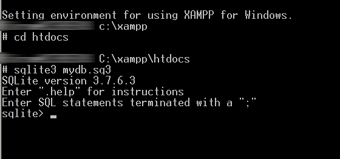
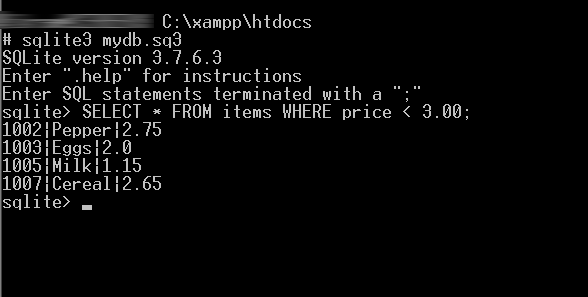

Use SQLite and PHP
XAMPP comes with built-in support for SQLite, making it easy to get started building database-powered applications with PHP. This guide will walk you through the process of creating and populating a new SQLite database using XAMPP, then accessing the data within it using PHP.
Begin by creating and populating a new database using the SQLite command-line client, as below:
-
Open your Windows command prompt by clicking the “Shell” button in the XAMPP control panel.
-
Change to the htdocs\ subdirectory of your XAMPP installation directory (typically C:\xampp) and create a new SQLite database file named mydb.sq3 with the SQLite command-line client:
cd C:\xampp\htdocs sqlite3 mydb.sq3
You should now see an SQLite prompt, as below:
 -
At the sqlite> prompt, create a new table to hold your data. In this example, the table is named items and it contains 3 columns, for item ID, item name and item cost. You can use standard CREATE TABLE syntax to create the table, and you can learn more about SQLite’s built-in datatypes here.
CREATE TABLE items (id INTEGER PRIMARY KEY, name TEXT, price REAL);
-
Add some data to the new inventory table using INSERT commands, as shown below:
INSERT INTO items VALUES ('1001', 'Salt', 3.15); INSERT INTO items VALUES ('1002', 'Pepper', 2.75); INSERT INTO items VALUES ('1003', 'Eggs', 2.00); INSERT INTO items VALUES ('1004', 'Bacon', 7.25); INSERT INTO items VALUES ('1005', 'Milk', 1.15); INSERT INTO items VALUES ('1006', 'Strawberries', 8.73); INSERT INTO items VALUES ('1007', 'Cereal', 2.65); -
You can now also run a SELECT query on the data. For example, the query below returns all items that cost less than $3:
SELECT * FROM items WHERE price < 3.00;
 -
Once you’re done using the database, exit it by typing .quit at the sqlite> prompt.
| The database file (in this example, mydb.sq3) contains all your tables and data, so you should remember to back it up regularly. |
The previous steps discussed how to create and use an SQLite database using the command-line client. However, more often than not, you’ll be using an SQLite database in combination with a PHP-powered Web application. XAMPP includes the PHP SQLite extension, so doing this is not very difficult at all.
To connect to your SQLite database and execute queries on it with PHP, use your text editor to create an example script named sqlite.php in the htdocs subdirectory of your XAMPP installation directory and fill it with the following code:
<?php
$db = new SQLite3('mydb.sq3');
$sql = "SELECT * FROM items WHERE price < 3.00";
$result = $db->query($sql);
while ($row = $result->fetchArray(SQLITE3_ASSOC)){
echo $row['name'] . ': $' . $row['price'] . '<br/>';
}
unset($db);
The first line of code creates a new SQLite3 object, using the mydb.sq3 database file you created earlier. Then, the object’s query() method is used to execute a SELECT query on the database, and the result object’s fetchArray() method is used to iterate over the result set. Adding the SQLITE3_ASSOC parameter to the fetchArray() method tells PHP to return the results as an associative array, making it easy to access individual fields of the result set and display them on a Web page.
Once done, save your changes and ensure that your Apache server is running. Then, browse to http://localhost/sqlite.php to execute the script. You should see something like this:
| To find out more about SQLite’s powerful features, read the SQLite documentation. |